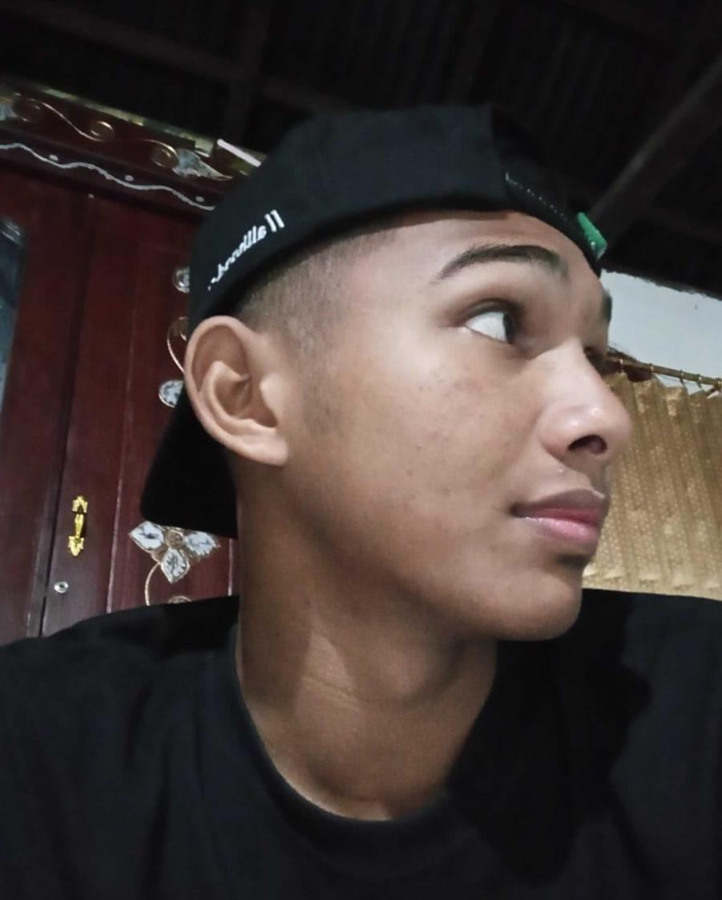
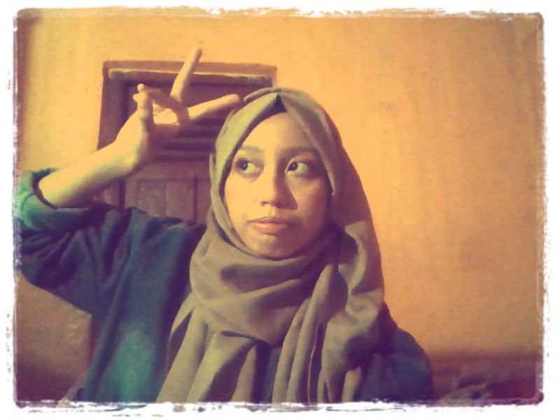
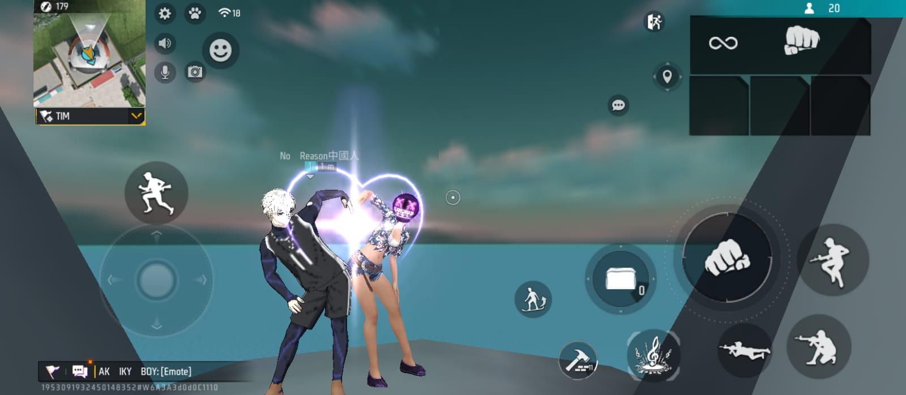
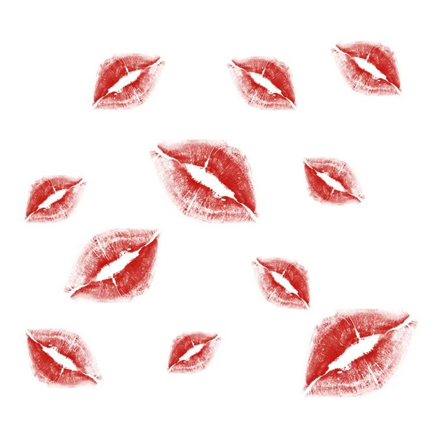
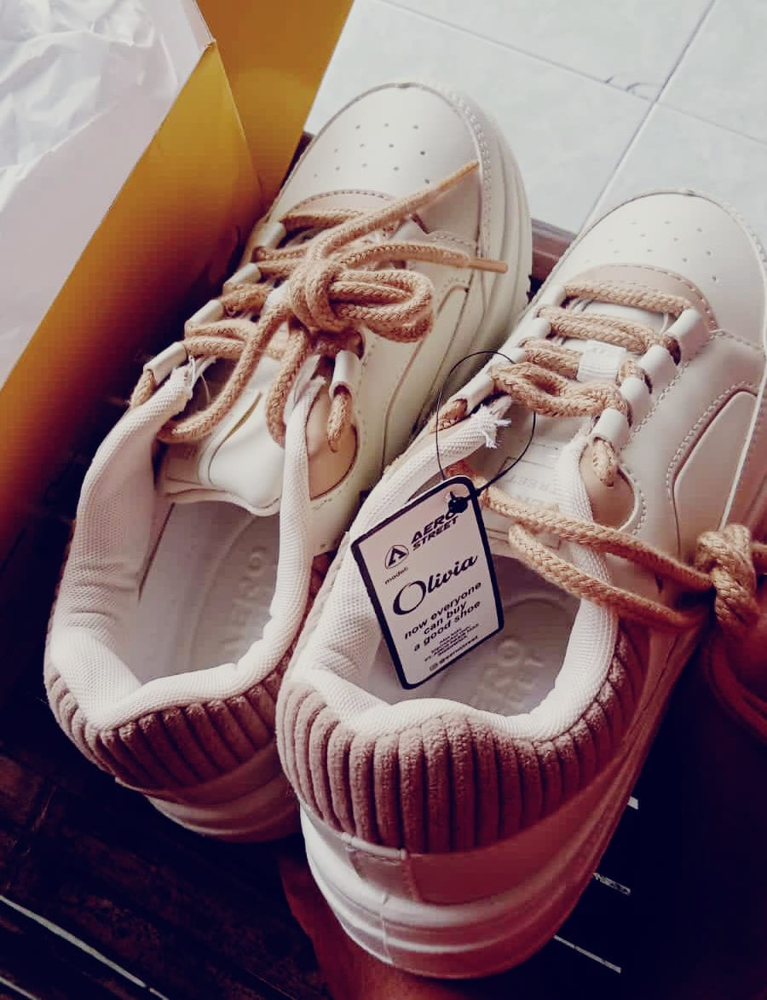
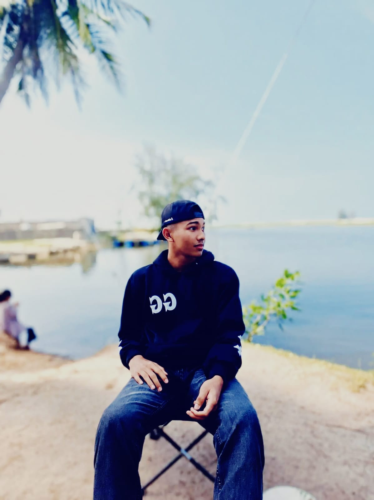
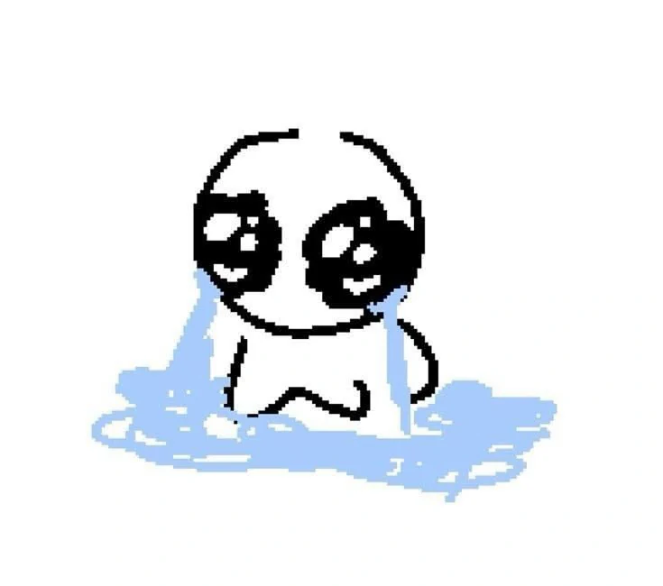
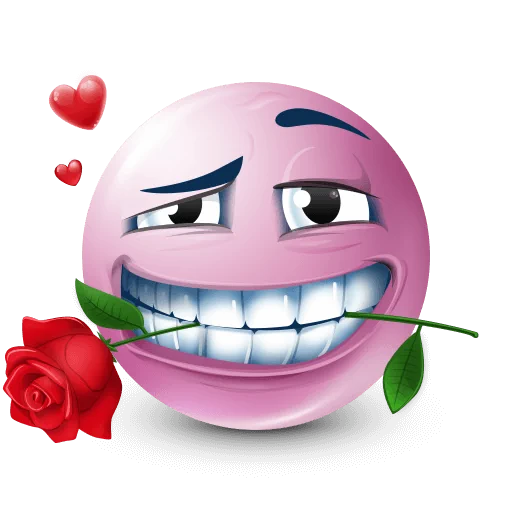
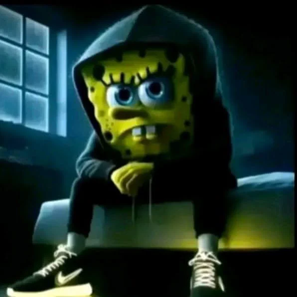
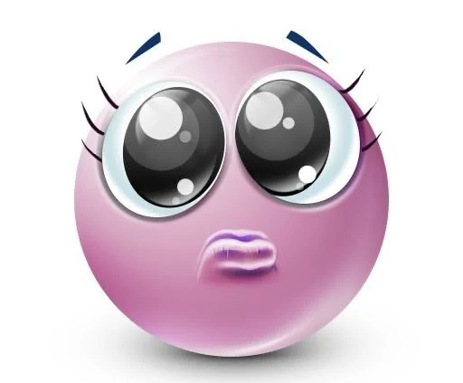

For You
Open

Hello my love 🥰, Kak Madun/Wahidku tersayang xixi<3 I am writing this letter to you because sometimes, when I look into your eyes, all my words just vanish. Rasanya kayak bumi berhenti berputar sejenak, dan aku always terpukau sama look kamu yang ganteng, suara kamu yang sleepcall-able itu, cara kamu bikin aku bahagia (hmm tipe aku bgt hehehehehe). I wanted to put these feelings into something tangible, sesuatu yang bisa kamu baca kapan pun kamu merasa ragu. This letter is a piece of my soul, poured out exclusively for you.

Cowo ganteng
kesayangan aku 🤍

And it's me, ur best baddie gf 🔥😜
Do you remember the very first time our paths crossed? Waktu itu sampai saat ini pun, aku sama sekali ga nyangka dan masih sampai sekarang. Random person yang aku temuin di atas robot ff waktu itu, tiba-tiba sekarang jadi orang yang paling berharga in my entire life. It felt like an ordinary day, but looking back, it was the day the universe decided to be incredibly kind to me. You walked into my life so effortlessly, membawa kehangatan yang mencairkan dinding pertahananku (yang mungkin kamu inget, cipa yang anti pacaran sama telpon mwehheheheh:3). From that day on, I knew my life would never be the same again.

Frozen in time. Aku sayang kamu 🫣(walaupun fotonya bukan yang awal sik hheeheheheh:>)
As time went by, my affection for you grew into something I can barely comprehend. Hari demi hari kita lewati, penuh tangis tawa, percakapan panjang, dan keheningan yang nyaman. I realized I was falling for you deeply and irreversibly. Aku jatuh cinta pada cara kamu melihat dunia, dan pada kebaikan hati kamu yang tulus. You are a masterpiece, and every single day, I discover a new detail to adore about you.


All my loOve and my kisSes for yOu:3
Whenever I miss you, I always find myself looking at our memories. Liat ini sayangg, ini barang kesayangan aku, yang sering aku pakai semenjak hubungan kita berjalan.

Thanks a lot, sayang :/
I don't just love your perfections; I love your flaws even more. Banyak orang mencari kesempurnaan, tapi bagiku, ketidaksempurnaanmu itulah yang membuatmu menjadi manusia yang paling nyata dan indah. The way you get confused, cara kamu ngejek aku dan bikin aku ketawa, and your stubborn habits—they all make you uniquely you. I love you not despite your imperfections, but because of them. You don't have to pretend to be strong all the time around me.

It's always u, sayang 🤍
We have faced our fair share of storms, haven't we? Tidak semua hari yang kita lalui itu cerah. Ada kalanya kita salah paham, ada ego yang bertabrakan. But what makes us special is that we never let go. Kita memilih untuk tetap tinggal, berbicara, dan memperbaiki. The hard times only proved to me that you are worth fighting for. Every argument we survive only makes the roots of our relationship grow deeper.

You are the definition of home to me. Saat dunia di luar sana terasa terlalu keras, bising, dan melelahkan, kamu adalah tempat pulang yang paling kunanti. Just hearing your voice has this magical ability to calm the chaos in my mind. Di pelukanmu, aku menemukan kedamaian. You are my safe haven, my peace, and my greatest comfort. Your presence alone is enough to heal my exhausted soul.
Through this letter, I want to make a promise to you. Aku berjanji untuk selalu berusaha menjadi pendengar yang baik untuk setiap ceritamu, entah itu hal yang penting maupun yang sepele. I promise to support your dreams and be your loudest cheerleader. Aku akan berada di barisan terdepan saat kamu berhasil, dan yang pertama menggenggam tanganmu saat kamu gagal. I will choose you today, tomorrow, and always.

I can't wait to see what the future holds for us. Membayangkan hari tua di mana kita duduk berdampingan, menertawakan masa lalu, adalah hal yang membuatku tersenyum. There are still so many places we need to visit, and memories we need to create. I am excited to write the next chapters of my life, as long as you are the main character right beside me.

.webp)
We have reached the end of this letter, but my love for you is endless. Terima kasih sudah mengizinkanku mencintaimu dengan cara yang luar biasa. You are the best thing that has ever happened to me. Tolong simpan surat ini, and whenever the world gets too dark, read this and remember that someone out there loves you more than words could ever describe.

With all my heart,
Yours (Syifa Cantik💌).